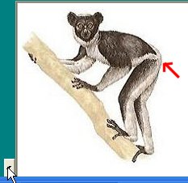
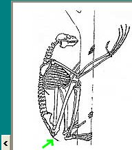

Construire
Construire
Construire
Elle utilise la liste de tous les taxons de l'ensemble choisi, ainsi qu'une partie des caractères biologiques, morphologiques et anatomiques disponibles.
La construction d'un tableau permet de faire le point sur les observations réalisées et de préparer éventuellement le classement ou l'établissement des parentés phylogénétiques.
Sélectionner les taxons dans le bandeau défilant, et les caractères dans la liste (ordre alphabétique).
Pour remplir la case, cliquer dedans. Les états possibles
du caractère s'affichent en même temps qu'un document
(schéma ou texte selon le type de donnée) permettant de
déterminer cet état. Cliquer sur l'état choisi
pour qu'il s'inscrive dans la matrice.
Remarque
: dans certains cas, le premier document affiché ne permet pas
de déterminer l'état du caractère. Par Exemple
l'Indri de la collection Primates possède une queue qui n'est
pas visible avec l'angle de vue du document. En cliquant sur le bouton
< on a accès aux autres document dont le squelette qui montre
clairement la présence d'une petite queue.
Pour sauvegarder un tableau, sélectionner dans le menu Fichier, puis Enregistrer le tableau.
Donner un nom au fichier de tableau. L'extension (.ntb) s'inscrira automatiquement, par défaut).
Ce fichier peut être enregistré dans n'importe quel répertoire. Si l'installation de Phylogène a été faite avec l'installateur, il suffit de double cliquer sur le fichier pour qu'il s'ouvre avec Phylogène.
Sélectionner dans le menu Fichier, puis Ouvrir,
Tableau de caractères.
Le fichier ouvre directement la Collection qui a servi à
construire le tableau.
{kind=link}
{kind=link}
{kind=link}